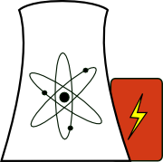

What is nuclear?
A good choice to sustain ourselves into the 22nd century
 Nuclear energy is one of the many natural resources that we know how to turn into heat and electricity. It is, by far, the most energy-dense of all these natural resources, meaning we can extract more heat and electricity from a given amount of it than from an equivalent amount of anything else. As an example, consider a chunk of coal and chunk of natural (unenriched) uranium, both weighing the same (1 kg) and both mined and isolated straight out of the earth. If we could suck all the energy out of the coal, it would run a 100W light-bulb for about 4 days. With the uranium, we could run the bulb for about 180 years. That’s just using the good kind of uranium, too. If we used a fast reactor and sucked all the energy from the not-so-good atoms in the same block of uranium, the light bulb could burn for 24,000 years. This kind of energy density eliminates huge amounts of the environmental footprint required to use less dense fuels, such as huge coal mines, massive gas and oil fields, trainloads of fuel shipments, and expansive wind or solar farms. Oh, and nuclear reactors do this all without releasing any pollutants into the environment.
Wow. So why do we still use coal, or anything else for that matter?
When nuclear energy hit the streets in the 1940s (after being developed as a weapon), it was infamously claimed that electricity would be too cheap to meter. Obviously that hasn’t happened. Why not?
- The reactors that we have designed and built so far to split atoms and release the energy are mostly large, complicated, and expensive. Once built, reactor operation costs very little (buying a few tonnes of uranium every 4 years is much cheaper than buying weekly trainloads of coal). But the way modern investor-return markets work, high capital costs matter more than the big picture. The high cost of constructing nuclear reactors has caused much financial trouble for nuclear energy, even though the long-term economics looks good.
- Several facilities involved in the nuclear fuel cycle can be used to produce materials that could be used in nuclear weapons. Enrichment plants can theoretically produce weapons-grade material along with reactor-grade. Recycling plants separate plutonium from nuclear waste, which can be stolen and used in bombs. This fact complicates progress in advanced nuclear technology, politically.
- The relatively small amount of nuclear fuel that goes into reactors becomes very nasty radioactive nuclear waste when it comes out. The nature of radioactive waste is terrifying to all -- you can’t see it, smell it, or taste it, but it can be in the room hurting you! Consequently, nuclear energy has a generally poor reputation among environmentalists and concerned families worldwide. This waste is not released to the environment, and nuclear scientists know ways to turn this waste into something that decays to harmlessness in several centuries (rather then hundreds of millennia), but the processes developed so far are expensive and challenging. There’s also the possibility of using thorium fuel, which has some advantages. Currently, we store all our nuclear waste in large containers called dry casks.
- Nuclear power is perceived as dangerous because of the accidents at Fukushima, Chernobyl, and Three Mile Island. These high-profile accidents were media sensations, but the number of casualties pales in insignificance compared to those associated with coal and gas. However, where coal and gas usually only kill or injure coal miners and gas refinery workers, nuclear accidents are indiscriminate. This makes them inherently scarier.
Oh. I don’t know what to think then
You’re not alone. But as you learn more about nuclear energy, you will find that there are good solutions and answers to all of the aforementioned concerns. It’s a known technology capable of producing 24/7 carbon- and emission-free electricity in magnitudes not only able to displace fossil fueled power generators but also to power the transition from gas to electric vehicles with fuel reserves that can last humanity well into the tens of thousands of years (with breeding, of course). It stands tall in a room with king coal, foreign oil, and the intermittent renewables, and has good responses to harsh criticism. While certainly not perfect, nuclear fission is capable of responsibly providing us with a large chunk of the energy we need.
Get started
with our What is Nuclear Energy article.
The best place to start from here is the nuclear energy article. It will give you a brief introduction to nuclear power and explain the basics of the good and bad aspects.
Join the discussion
We opened up a forum
We have a live forum up and running where you can ask questions or otherwise discuss nuclear technology, politics, and more. Click here to go there now.
Nuclear Renaissance
3-24-2008 We posted a new article detailing some aspects of the nuclear renaissance. More may be added periodically.
What we’re up to
3-12-2008 The Co-op America has posted 10 reasons why nuclear power is bad. Many of the concerns are real, but we have compiled responses for every one of them. Some of the claims are pure falsities. Our detailed responses can be found at anti-nuclear point/counterpoint. Also in the works is a article on Three Mile Island.